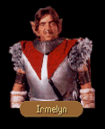

|
|
|  |
|
|
| FIRST MEETING (Quest Trigger) |
Gorath motioned to the figure across the room. The man walked over to join them. He stood before them, eyebrows arched inquisitively. IRMELYN: Drink what you can for Delekhan will have the rivers running piss and chickens laying dust for us once this is at an end. There is nothing to be gained in this campaign, but the sparks in his eyes have blinded him. Damn the Six! Damn those magicians that lead us to death and imprison us all. GORATH: I see that you have little wish to keep your head attached to your shoulders, Irmelyn. Your tongue wags and you drool your brains onto the table for all to see. Your drink makes you a fool. IRMELYN: What the drink makes me is only of concern to me and the tavern keeper. Leave me be, yellowtail. GORATH: I suggest you consider advice from one who has suffered Delekhan's wrath and lived to tell the tale. I take it that some acquaintances of yours have been detained by Delekhan's magicians? IRMELYN: What of it? Nothing's to be done. The Six have thrown Obkhar to Venutrier and his dogs and tomorrow they'll come round and hurry the lot of us to our deaths. GORATH: I propose we help one another rather than work against. What could you offer in exchange for Obkhar's release from the naphtha mines? IRMELYN: If you can manage that, I can get you half the boy's weight in gold or the equivalent thereof. Obkhar's tribe alone would willing pay such a ransom. GORATH: Then get you hence and gather those fees and we will see what may be engineered. We will meet you again in this tavern when we have achieved Obkhar's release.
|
| SECOND MEETING (Quest Not Performed) |
Gorath motioned to the figure across the room. The man walked over to join them. He stood before them, eyebrows arched inquisitively. IRMELYN: What word of Obkhar? GORATH: As yet we have not penetrated the defenses of the Six, but we shall do so soon enough. Do not worry about your friend, Irmelyn. He will be free... IRMELYN: Then go about your business, yellowtail and I will be about mine. GORATH: I will return.
|
| SECOND MEETING (Quest Performed) |
Gorath motioned to the figure across the room. The man walked over to join them. He stood before them, eyebrows arched inquisitively. IRMELYN: Obkhar arrived here shortly before you and described a pair...a human boy and Gorath of the Ardanien. I was going to keep the reward for myself, but he insisted you were deserving of it. GORATH: He is as reputable as I have heard of him. It could also be that he wished to save you your life. IRMELYN: Save your blade for someone more deserving. I will pay your fee. Two hundred gold and not a royal more of it.
|
| IF NOT CULLICH | IF CULLICH |
|
GORATH:
Food in our bellies and beds to rest on, an acceptable exchange for a man's life. I would ask
one more thing of you, and then we will be gone from this place. Would you know where we could
find a certain witch woman who is known as Cullich? IRMELYN: I have heard word of her, yes. Fled south of Caern and west of the fork which leads to Wyke. Probably down there healing up Delekhan's dogs... GORATH: I wouldn't know. Our business is at an end, Irmelyn. Good fortune and health to you.
|
GORATH:
Food in our bellies and beds to rest on, an acceptable exchange for a man's life. Our business
is at an end, Irmelyn. Good fortune and health to you.
|